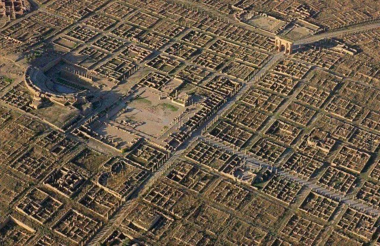
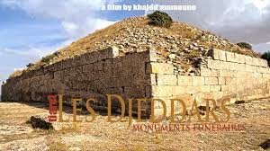
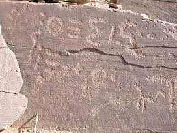

TIMGAD

Introduction
The city of Timgad (historically known as "Thamugadi") is one of the most important archaeological sites in North Africa, located in the Aurès Mountains of Algeria, east of the city of Batna.
It is commonly believed that the word “Timgad” is a distortion of the Latin word “Tamogadi” and means mother of prosperity or happiness, but this information is false, as a search in the Latin dictionary does not find any origin for it, nor any similar word or even one that contains the same root.
“Tamogadi” is an Amazigh word composed of two words: the first, “Tamo,” meaning a large bundle of grass, and the second, “Ghadi,” meaning there (over there), so the name becomes “the bundle of grass there,” perhaps indicating the greenness of the region and that it was full of grass when the city was built on it.
History
Description
A city that was taken as an impregnable fortress surrounded by a large wall, designed in the shape of a chessboard where the two main corridors intersect and are intersected by overlapping sub-corridors to form meeting spaces. The ground floor of residential buildings is adjacent to various public facilities, including temples, baths, the market with its shops, as well as the public square and the theater with its round amphitheaters.
At the entrances to this square city stand the huge stone arches in their ancient splendor of carved decorations and fixed historical inscriptions. As for the southwestern side, as an original facade, there appears the “Arch of Triumph” or what is called the “Arch of Trajan”.
Literary
Some activists believe that focusing on "Romanism" diminishes the Amazigh role and is used to serve colonial narratives (French or Arab) that portray the Amazigh as "permanently defeated".
Some argue that the Roman occupation relied on stealing achievements and attributing them to Rome, and that Timgad is an example of "erasing the Amazigh identity" and replacing Amazigh symbols with Roman symbols.
They say that the ideal grid layout (decoumen and cardo) is not a Roman invention; rather, it is said to be an Amazigh urban system older than the presence of the Romans in the region.
In Facebook and Reddit posts, they display images of Berber symbols in Timgad (especially the sun, star, and motifs), and say that they have been erased or reinterpreted as “Roman.”
Some researchers argue that the Romans built nothing in North Africa; everything was stolen from the Berbers. Timgad, a Berber city, was attributed to Rome to justify the colonization of the region. They contend that the remains of Timgad contain evidence of a local civilization that was not originally Roman, and that the Romans simply did not have the time or resources to build a city of that size in such a remote area.
According to ethnologist Jacques Horecki, Timgad could mean wealthy Berber population, while some sources indicate that Timgad is originally “Thamqit,” meaning summit in Berber.
An Algerian researcher asserts that the archaeological sites in Tiaret (western Algeria) and areas such as Isser, Mouzaïa, and Algiers are "purely Berber, authentic," and were never occupied by either the Romans or the Phoenicians. He states, "They are neither Phoenician nor Roman... no occupation ever entered the regions containing these sites." He includes photographs of archaeological remains such as tombs and walls, and describes the city of Constantine as "purely Algerian Berber," along with similar cities in the Aurès Mountains like Ichoukane, which were built by the Berbers before the Romans.

Timgad was an existing Berber city; the Romans merely occupied it and placed their names on the temples and gates to make it appear Roman. It is said that the Romans did not build the city from scratch but seized it and erased the history of its original inhabitants.
The Berber inscriptions were broken, and the temples were restored to include Roman statues. They say that the Berber sun symbols, geometric patterns, and inscriptions of the ancient Libyan language were present and were ignored or removed.
